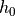
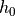

WsfPiecewiseExponentialAtmosphere¶
- WsfPiecewiseExponentialAtmosphere inherits WsfAtmosphere
Overview¶
The WsfPiecewiseExponentialAtmosphere models the atmospheric density using a series of exponential profiles for different altitude ranges. In each range the profile takes the form:
![\rho(h) = \rho_0 \exp{\left[-\frac{h - h_0}{H}\right]}](../../_images/math/f4bda2bb85819562c13093f0b98742046d50f00b.png) ,
,
where  is a scale height,  is the altitude at which the
segment begins, and
is a scale height,  is the altitude at which the
segment begins, and  is the density of the model at that
altitude. The values of these constants can be found in Vallado’s
Fundamentals of Astrodynamics and Application, Fourth Edition, in Table 8-4
on page 567. The values are chosen so that the resulting density is
continuous at the segment boundaries.
is the density of the model at that
altitude. The values of these constants can be found in Vallado’s
Fundamentals of Astrodynamics and Application, Fourth Edition, in Table 8-4
on page 567. The values are chosen so that the resulting density is
continuous at the segment boundaries.
Static Methods¶
- WsfPiecewiseExponentialAtmosphere Construct()¶
Construct an atmosphere model with a piecewise exponential density profile.